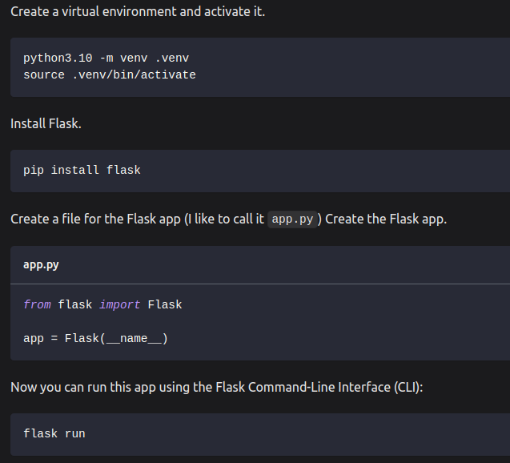

Create a virtual environment and activate it.
python3.10 -m venv .venv

pip install flask
app.py
from flask import Flask app = Flask(__name__)
Now you can run this app using the Flask Command-Line Interface (CLI):
flask run
But the app doesn't do anything yet! Let's work on our first API endpoint next.